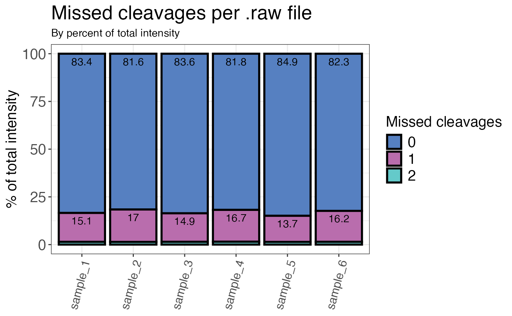

Calculates the percentage of missed cleavages for each sample (by count or intensity). The default settings remove grouping variables without quantitative information (intensity is NA). These will not be used for the calculation of missed cleavage percentages.
qc_missed_cleavages(
data,
sample,
grouping,
missed_cleavages,
intensity,
remove_na_intensities = TRUE,
method = "count",
plot = FALSE,
interactive = FALSE
)a data frame containing at least sample names, peptide or precursor identifiers and missed cleavage counts for each peptide or precursor.
a character or factor column in the data data frame that contains the sample name.
a character column in the data data frame that contains either precursor or
peptide identifiers.
a numeric column in the data data frame that contains the counts
of missed cleavages per peptide or precursor.
a numeric column in the data data frame that contains the corresponding
raw or normalised intensity values (not log2) for each peptide or precursor. Required when
"intensity" is chosen as the method.
a logical value that specifies if sample/grouping combinations with intensities that are NA (not quantified IDs) should be dropped from the data frame for analysis of missed cleavages. Default is TRUE since we are usually interested in quantifiable peptides. This is only relevant for method = "count".
a character value that indicates the method used for evaluation. "count" calculates the percentage of missed cleavages based on counts of the corresponding peptide or precursor, "intensity" calculates the percentage of missed cleavages by intensity of the corresponding peptide or precursor.
a logical value that indicates whether the result should be plotted.
a logical value that specifies whether the plot should be interactive (default is FALSE).
A data frame that contains the calculated percentage made up by the sum of all peptides or precursors containing the corresponding amount of missed cleavages.
library(dplyr)
set.seed(123) # Makes example reproducible
# Create example data
data <- create_synthetic_data(
n_proteins = 100,
frac_change = 0.05,
n_replicates = 3,
n_conditions = 2,
method = "effect_random"
) %>%
mutate(intensity_non_log2 = 2^peptide_intensity_missing)
# Calculate missed cleavage percentages
qc_missed_cleavages(
data = data,
sample = sample,
grouping = peptide,
missed_cleavages = n_missed_cleavage,
intensity = intensity_non_log2,
method = "intensity",
plot = FALSE
)
#> # A tibble: 18 × 3
#> sample n_missed_cleavage mc_percent
#> <fct> <fct> <dbl>
#> 1 sample_1 0 83.4
#> 2 sample_1 1 15.1
#> 3 sample_1 2 1.45
#> 4 sample_2 0 81.6
#> 5 sample_2 1 17.0
#> 6 sample_2 2 1.42
#> 7 sample_3 0 83.6
#> 8 sample_3 1 14.9
#> 9 sample_3 2 1.46
#> 10 sample_4 0 81.8
#> 11 sample_4 1 16.7
#> 12 sample_4 2 1.50
#> 13 sample_5 0 84.9
#> 14 sample_5 1 13.7
#> 15 sample_5 2 1.43
#> 16 sample_6 0 82.3
#> 17 sample_6 1 16.2
#> 18 sample_6 2 1.46
# Plot missed cleavages
qc_missed_cleavages(
data = data,
sample = sample,
grouping = peptide,
missed_cleavages = n_missed_cleavage,
intensity = intensity_non_log2,
method = "intensity",
plot = TRUE
)
